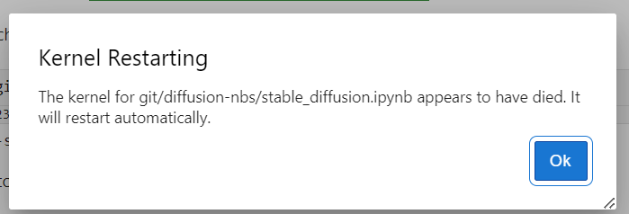
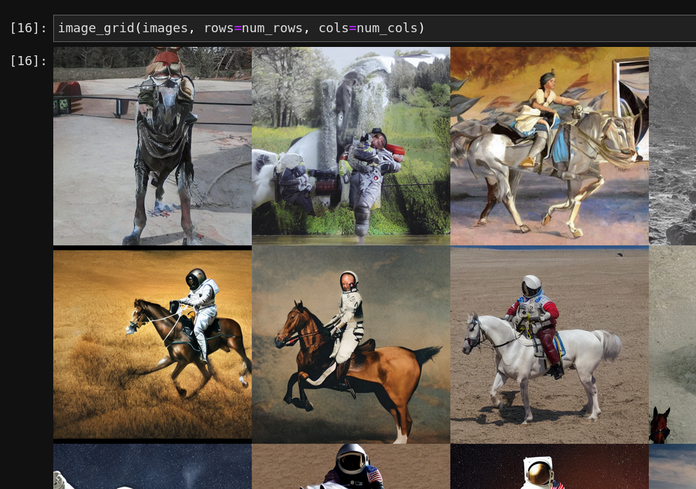
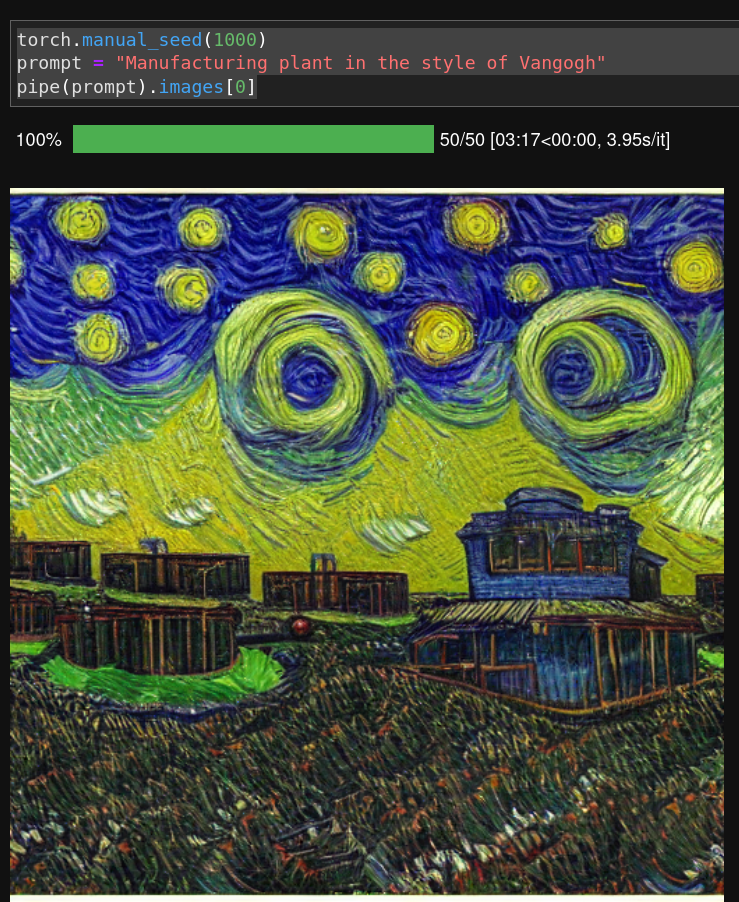
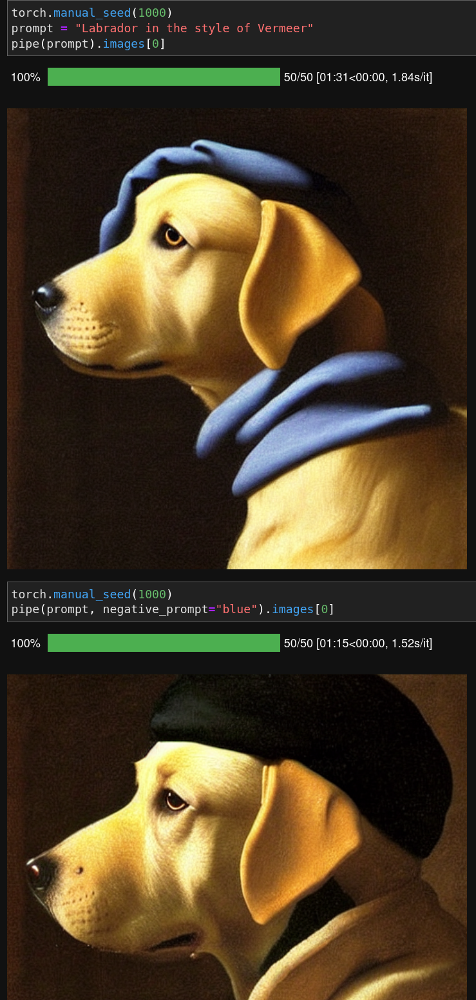
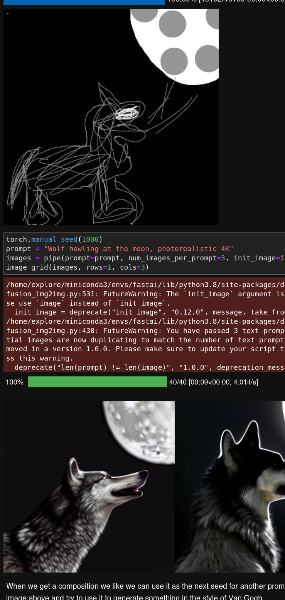
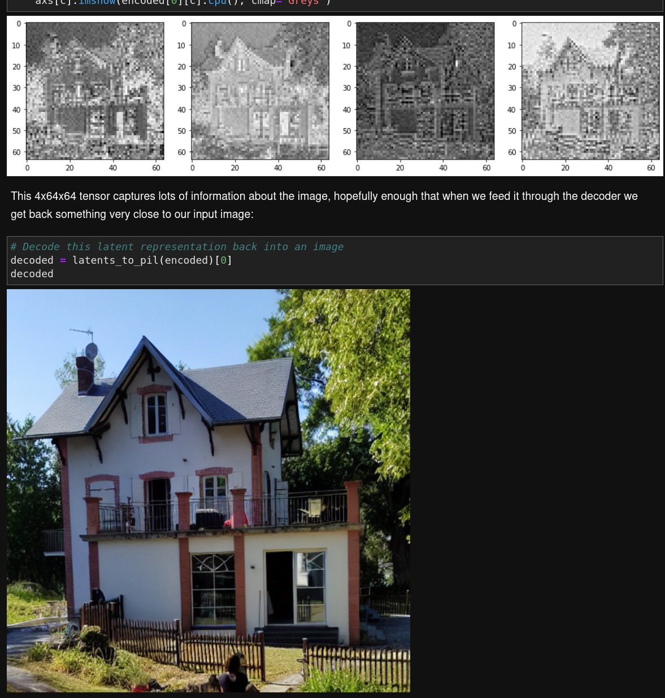
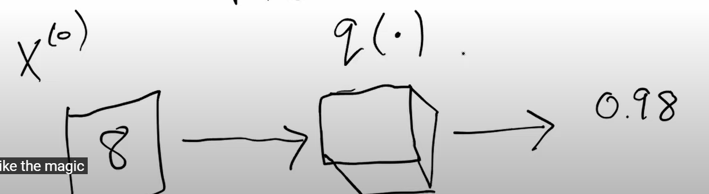

For a reason, it fails directly when running pipe = StableDiffusionPipeline.from_pretrained("CompVis/stable-diffusion-v1-4", revision="fp16", torch_dtype=torch.float16).to("cuda")

image.png
under linux
As a workaround, I can execute from my full linux box.
But because it has less GPU memory (8 GB), I need to run pipe.enable_attention_slicing()
If your GPU is not big enough to use pipe, run pipe.enable_attention_slicing()
As described in the docs:
> When this option is enabled, the attention module will split the input tensor in slices, to compute attention in several steps. This is useful to save some memory in exchange for a small speed decrease.
pipe.enable_attention_slicing()
and now it works quite well

image.png
But I don’t remember exactly how my fastai environment has been installed. Because I see a reference to fastchan, I guess it was something like conda install -c fastchan fastai
Direct prompt and prompt with style are quite well known

image.png
negative prompt
But I didn’t know about negative prompt

image.png
Here all reference to blue have been removded. Quite neat
sketch - image to image
And with another model image to image,
you can give an initial image, and this image is then noised and used as a starting point such as in

image.png
And then we can iterate by picking one of these 3 images and use it as an init image
init_image2 = images[2]prompt ="Oil painting of wolf howling at the moon by Van Gogh"images = pipe(prompt=prompt, num_images_per_prompt=3, init_image=init_image2, strength=1, num_inference_steps=70).imagesimage_grid(images, rows=1, cols=3)
add your own tokens
Textual inversion is a process where you can quickly “teach” a new word to the text model and plain its embeddings close to some visual representation. This is achieved by adding a new token to the vocabulary, freezing the weights of all the models (except the text encoder), and train with a few representative images.
For example, we fine-tuned a model with a prompt like "photo of a sks person", using the rare sks token to qualify the term person, and using photos of Jeremy as the targets. Let’s see how it works.
We don’t have the detail about how to retrain it though. This is what is used in Dreambooth.
RuntimeError: CUDA out of memory. Tried to allocate 512.00 MiB (GPU 0; 7.80 GiB total capacity; 6.15 GiB already allocated; 142.06 MiB free; 6.67 GiB reserved in total by PyTorch) If reserved memory is >> allocated memory try setting max_split_size_mb to avoid fragmentation. See documentation for Memory Management and PYTORCH_CUDA_ALLOC_CONF
the autoencoder
This is quite impressive that vae can compress/decompress with such a factor (/48) and keep this level of quality

image.png
I have to watch this video again to propose a fair understanding of it
They start by explaining notations which is quite helpful.
For example in >\(q(X^{(0)})\) data distribution
\(X\) denotes inputs, \(X^{(0)}\) denotes a sequence, one can expect to see \(X^{(1)}\), \(X^{(2)}\), .., \(X^{(n)}\)
and \(q\) (quite close to \(p\)) is a probability density function. My representation of this is a curve (given X is of dimension 1) which area under curve equals to 1. And I have questions about how to calculate probability density function for multiple dependent variables. Scikit-learn can help density estimation Or VAE? For independant variable, we can just multiply each prob density.
\(q\) is this kind of magic function as introduced by Jeremy in the 1st video which provides probability that \(X^{(0)}\) is enter your target: mnist or other kind of stuff expected

image.png
Next notation is \(q(X^{(t)}|X^{(t-1)})\)
We can think of it as a function \(q\) which transforms \(X^{(t-1)}\) to \(X^{(t)}\) and what is given is again the probability.
where p is the here the conditionnal probability to get clearer and clearer, and \(\Box\) is the mean, \(\Delta\) is the variance. Those are unknown but can be fit.
We can fit this model by maximizing the likelihood function. Practically we prefer to use log likelihood. (we like its properties to turn products to sums, and by taking exponential such as in normal distribution we get identity which is quite convenient) And more recent works showed that we can use one particular loss to dot it which is ELBO (evidence lower bound, evidence is another name for likelihood). elbo being easily calculated, one can use it as a loss function. You can now train a NN to get \(\Box\) and \(\Delta\).
To match distributions between the forward process and the backward process, we will use special function KL divergence. KL divergence of gaussians can be calculated analytically so it eases the process.
In 2020, a paper introduced a new model DDPM (Denoising Diffusion Probabilistic model). Main idea is to simplify diffusion processes by considering only mean. Variance is set as a constant. In that case we can just use mse(noise) as a loss.